If you are using Mac OS X 10.4.x ("Tiger") to build your application, then the Apple tutorial's section on building the UI may be somewhat confusing. Apple's tutorial uses InterfaceBuilder 3.x to show how to build an interface, and there were many interface changes between versions 2.x and 3.x of InterfaceBuilder. In this section we see how to build the UI using InterfaceBuilder 2.x.
Launch InterfaceBuilder
Start by locating Apple's InterfaceBuilder application. If you installed Apple's Developer Tools, InterfaceBuilder should be in the folder "/Developer/Applications/":

NOTE: If you have not installed Apple's Developer Tools, you should do that now. You will not be able to build the CurrencyConverter example without them. The Developer Tools are distributed as an optional install with Mac OS X 10.4 ("Tiger"). Look for the "XCode Tools" package in the "Optional Installs" folder on the Mac OS 10.4 install disk.
Once you have located InterfaceBuilder, double-click to launch the application. InterfaceBuilder presents a window you can use to choose a template for the nibfile you are going to create.
Make sure the "Application" option is selected in the "Cocoa" section and click the "New" button to create a new nibfile. InterfaceBuilder creates a new application nibfile, but doesn't immediately save it. The Objective-C objects that represent the new application's interface appear in a new untitled window:
The intial window and menubar also appear on the screen. The new application's name appears in the menus as "NewApplication". Save the new nibfile into the "currency-converter" folder that you created earlier (on this page). Give the new file the name "CurrencyConverter.nib"
NOTE: Most Objective-C application projects use a main nibfile called "MainMenu.nib", and if you use XCode to create a new application project, it creates a nibfile with that name. Apple's CurrencyConverter tutorial assumes that the name of the main nibfile is "MainMenu.nib".
So, why do we tell you to use a different name? Clozure CL has a main nibfile built into it, whose name is "MainMenu.nib". Normally you don't see it, and don't even need to know that it exists. But the Clozure CL application-building tools create a new application by copying resources from the Clozure CL application, so that your new application has available to it all the built-in Clozure CL tools. We ask you to name your nibfile "CurrencyConverter.nib" so that it can coexist with the Clozure CL main nibfile without causing any problems.
This difference between a Lisp project and an Objective-C project might be a little confusing at first. Just try to keep in mind that whenever Apple's tutorial refers to the "MainMenu.nib" file, it means the file we have just created and named "CurrencyConverter.nib". In a Clozure CL project, "MainMenu.nib" is the name of the main Lisp nibfile, not your application's main nibfile.
Resize the Window
Make the window smaller by dragging the bottom-right corner of the window inward.
Change the Title of the Window
InterfaceBuilder creates the initial window with the title "Window". Change the title to the more appropriate "Currency Converter":
Click the Window object in the "Currency Converter" window.
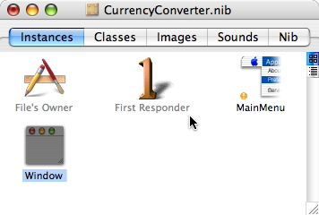Choose "Attributes" from the drop-down menu in the Inspector window:
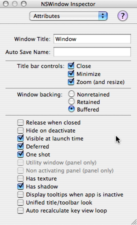Change the "Window Title" field to read "Currency Converter":
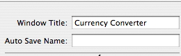
Add Text Fields
In InterfaceBuilder's Palettes window, select the "Cocoa Text" view, and find the NSTextView object:
Drag an NSTextView object and drop it into the "Currency Converter" window:
If you drag a view near the edges of a window, InterfaceBuilder displays blue guide lines that show the standard placement of a view near the edge of the window. Drag the text view to the right and upward until the guide lines appear, and then let go. The text view is then positioned in the standard way.
Now add two more text fields. You can drag them from the palette as you did the first one, or you can duplicate the first one. To duplicate, select the first text view and then choose "Duplicate" from the "Edit" menu. Alternatively, you can option-drag the text field to duplicate it.
Label the Text Fields
Now add labels to the text fields, to identify their purposes for the user. For each text field, drag a Label object from the palette and drop it next to the field. (Alternatively, you can drop one Label and then duplicate it, just as you can duplicate the text fields.)

Just as InterfaceBuilder displayed guidelines to help you position the text field near the edge of the window, it also displays guide lines to help you position the labels near the text fields. Just drag each label until the blue guide lines appear, then release the label.
Now change the text of the labels. Click a label to select it. Then show the Inspector by choosing the "Show Inspector" item from the "Tools" menu. Select the "Attributes" item from the pull-down menu at the top of the Inspector window, and type the correct text into the Title field. For example, here is how to enter the text for the top label:
Here's how the labels should look after you have entered the text for all three:
When you first enter the text for a label, the label may not be wide enough to show it all. In that case, you'll see only part of the text in the label. You can resize the label to make the full text visible. Click the label to select it. Notice the small blue dots that surround it. Grab a dot on the left side and drag it to the left to make the label wider, until you can see the entire text.
Change Text Field Attributes
The first two text fields accept user input; the last displays the result of the conversion. We want the first two text fields to be editable, so users can enter the values to use in the conversion. We don't want the last field to be editable, but we do want users to be able to copy text from it.
We can control all this behavior using text-field attributes, configurable in the Inspector.
Select the first text field
Choose "Show Inspector" from the "Tools" menu
Make sure "Attributes" is selected in the pull-down menu at the top of the Inspector window
Ensure that the "Editable" and "Enabled" boxes are checked in the "Attributes" display of the Inspector window
Repeat this process for the second text field
Finally, repeat it again for the last text field, but this time make sure the "Editable" box is unchecked
Add a Button
Now we add a button that activates the currency conversion.
Drag a Button object from the palette and drop it on the window
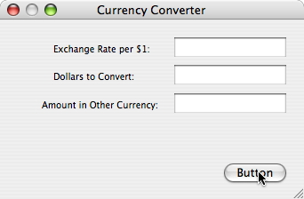Double-click the button and change its title to "Convert"
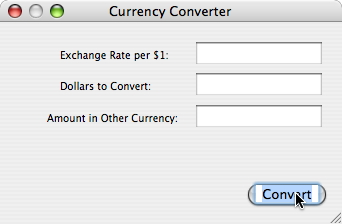Select the button and then choose "Attributes" from the pull-down menu at the top of the Inspector window. Almost halfway down the "Attributes" view of the Inspector window, find the "Key Equiv" field. Choose "Return" from the pulldown menu in that field.
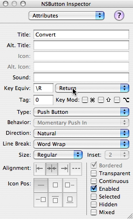When you choose "Return", InterfaceBuilder enters "\R" in the text field for the Key Equivalent. Now when a user hits the "Return" key, your application will behave as if they had clicked the "Convert" button.
Add a Separator
Now add a separator line to visually group the text fields together. Drag a separator line from the palette and drop it above the button.
Drag the ends of the separator line until it spans a visually pleasing width. As always, you can use the blue guidelines that InterfaceBuilder displays to adjust the size and position of the line and other elements to conform to Apple's Human Interface Guidelines.
Set Up the Menus
InterfaceBuilder creates the standard menus for a new application, but it doesn't know the name of the application. Consequently, the Application menu and several menu items use the name "NewApplication" where they should use the name of your application. Change the text of these items so that they read "Currency Converter" instead of "NewApplication".
Double-click the text "NewApplication" in the application menu of your application's menubar. Change the text to "Currency Converter".
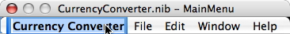NOTE: This change isn't really enough to get your application to display the right name for the Application menu when it's launched; the section on building the application explains how to make sure the correct name appears.
Repeat this process for each menu item where the name "NewApplication" appears. Using the same method you used to change the name of the application menu, edit the "About NewApplication" item, the "Hide NewApplication" item, and the "Quit NewApplication" item in the application menu. Then edit the "NewApplication Help" item in the "Help" menu.
Tighten Up the Window Layout
InterfaceBuilder provides layout tools with which you can easily clean up the layout of a UI window and ensure it conforms to Apple's user interface guidelines.
Select the "Exchange Rate" text label. Then Shift-click the other two labels to include them in the selection (actually, it doesn't matter which label you select first).
Choose "Layout" > "Size to Fit" to shrink the labels to the smallest sizes that still show all the text
Choose "Layout" > "Alignment" > "Align Right Edges" to line up the right sides of the labels
With all three labels still selected, drag them up and to the left. Release them when the blue guidelines show at the top and left side of the window.
Now select all three text fields. You can click one of them, then Shift-click to add the others to the selection. Drag them up and left, toward the labels. Again, release them when the blue guide line appears to show you the proper distance from the labels. A guide line also appears to show you when the fields are vertically aligned with the center label.
Next, grab the separator line and move it up and to the left. Release it when its left edge is aligned with the left edge of the bottom label, and its top is the recommended distance from the bottom label and its text field. Then drag the right end of the separator line to resize it until its right edge is aligned with the right edge of the bottom text field. Again, guide lines show when you have found the proper distances.
Grab the button and move it up and left, again using the guide lines to help you find a good position.
Finally, resize the window. When the blue guide lines appear on the right and bottom of the window, it's the right size for its contents.
Now your application window should look something like the one in the illustration:
Enable Tabbing Between Text Fields
Users generally expect to be able to use the Tab key to move from one text field to the next in a dialog box. InterfaceBuilder enables you to specify the tabbing order in text fields.
Choose "Layout" > "Keyboard Navigation" > "Show Keyboard Check". InterfaceBuilder displays a set of small icons that identify UI elements that can respond to key events.
Select the "Exchange Rate" text field (the field, not the label) and then choose "Layout" > "Keyboard Navigation" > "Make Initial First Responder". A small "1" icon appears in the text field to show that when the application launches, that field receives keyboard events.
Control-drag from the "Exchange Rate" field to the "Dollars" field. InterfaceBuilder shows the "Connections" Inspector, and, because Keyboard Check is enabled, automatically selects the "nextKeyView" outlet. Click the "Connect" button in the Inspector window to confirm.
Repeat the previous steps to connect the "Dollars" field back to the "Exchange Rate" field. That way, tabbing moves the insertion point from the "Exchange Rate" field to the "Dollars" field, and then back to the "Exchange Rate" field. Control-drag from the "Dollars" field to the "Exchange Rate" field, then click "Connect" to confirm.
We don't enable tabbing into the "Amount" field because it's not an editable field; it's used only to show the result of a conversion.
Set Up the Classes Used In the User Interface
The visual elements of your application's user interface are all ready now. The last thing you must do is create descriptions of any custom classes used by the application when users interact with the interface.
When a user clicks the "Convert" button, it should send a message to a custom class that causes the conversion to take place. In order for the application to connect the user interface to classes that perform these actions, you must add descriptions of your classes to the nibfile. Fortunately, InterfaceBuilder can create class descriptions and save them in the nibfile for you.
ConverterController
ConverterController is the controller class that the user interface communicates with directly when the "Convert" button is pressed. Create a description of the ConverterController class, and then create an instance of it.
In InterfaceBuilder's "CurrencyConverter.nib" window, click the "Classes" tab. The window shows a browser view of all available Objective-C classes:
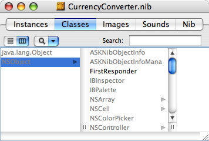Control-click the "NSObject" entry in the browser, and choose "Subclass NSObject" from the popup menu. InterfaceBuilder creates a new entry initially called "MyObject". Change the name from "MyObject" to "ConverterController".
Select the "ConverterController" class in the browser, then activate the Inspector window and choose "Attributes" from the popup menu at the top of the Inspector. At the bottom of the "Attributes" view is a list of actions or outlets. Select "Outlets", and use the "Add" button to add four fields:
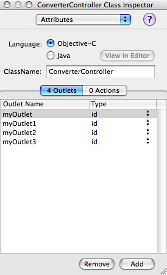Rename these four fields to: "amountField", "dollarField", "rateField", and "converter":
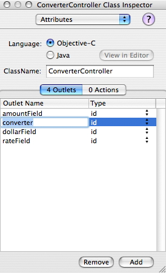Now add the action that is triggered when the "Convert" button is pressed: switch to the Actions view and use the "Add" button to add a new action:
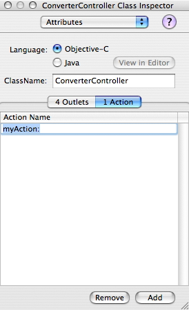Change the name of the action from "myAction:" to "convert:"
Now create an instance of the ConverterController class. In the browser, Right-click the ConverterController class and choose "Instantiate ConverterController". The browser view automatically switches to the Instances view to show you the newly-created instance of ConverterController as a blue box icon. There is a small yellow flag next to the ConverterController instances to show that it has outlets that are not connected to anything. In our final step, we'll create the correct connections for the instance's outlets, which will enable the application to send messages correctly to the objects that implement its behavior.
Converter
Converter is the model class that implements the actual conversion code. Create a description of the Converter class, and then create an instance of it. Repeat the steps you used to create the ConverterController class and instance to create a Converter class and instance:
Switch to the browser view in the "CurrencyConverter.nib" window.
Control-click NSObject and choose "Subclass NSObject" from the resulting popup menu.
Change the name of the newly-created class from "MyObject" to "Converter"
Control-click the "Converter" class and choose "Instantiate Converter" to create an instance of the Converter class.
The model class, "Converter", has no outlets or actions, so you don't need to add anything to it before instantiating it. Your code will implement a conversion method, but InterfaceBuilder doesn't need to know about it; the "convert:" method in your code will know everything it needs to about the "Converter" class. You just need to create the class description and the instance so that your application will start up with the correct objects created and connected.
Connecting the Outlets
The final step in setting up the user interface is establishing connections between the outlets and objects in the interface, so that messages are sent from the user interface to the correct objects.
Connect the "Convert" button to the "ConverterController" instance. Control-drag from the "Convert" button to the "ConverterController" instance. Make sure the "convert:" action is selected in the "Target/Action" view of the Inspector window, then click the "connect" button to confirm.
Connect the "ConverterController" instance to the text fields. Control-drag from the "ConverterController" instance to the "Exchange Rate" field. Select "rateField" in the "Outlets" view of the Inspector window and click "connect" to confirm. Then repeat this process, connecting "dollarField" to the "Dollars" text field, and "amountField" to the "Amount" field.
Finally, connect the "ConverterController" to the "Converter" instance. Control-drag from the "ConverterController" instance to the "Converter" instance. Select the "converter" outlet in the Inspector window and click "connect" to confirm.
The nibfile now contains descriptions of the custom classes that your code will implement, including connections between their outlets and the objects with which they must communicate. You can save the nibfile and proceed to write the code that implements their behavior.
You can continue now with the section on "Creating a Lisp File".